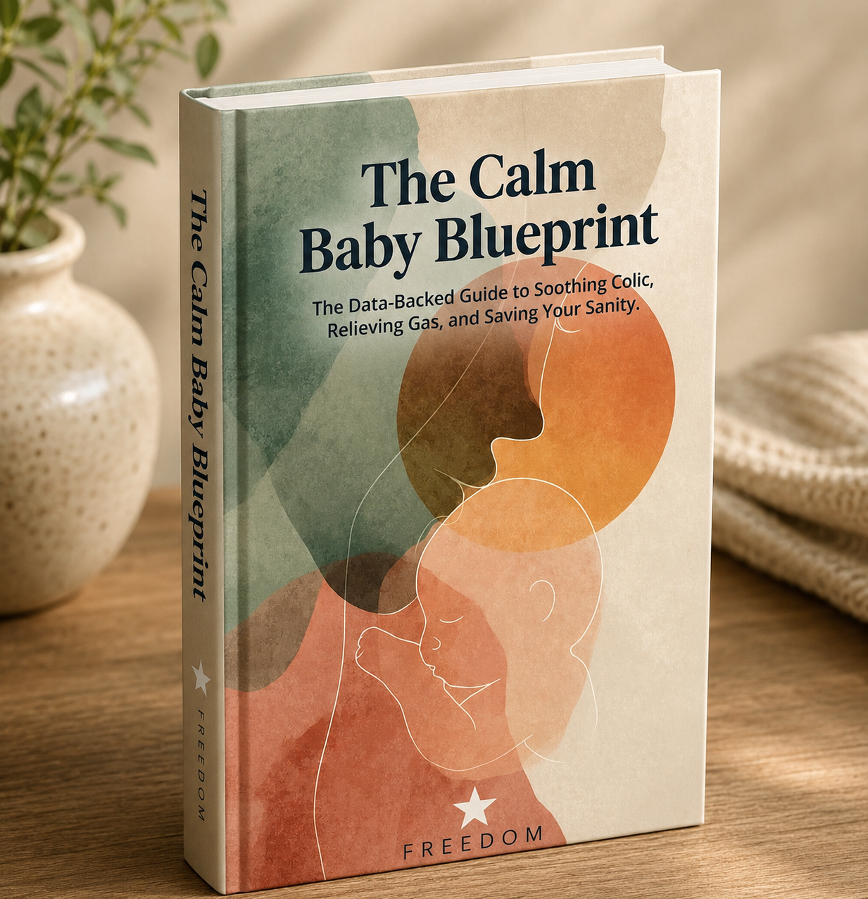

It’s 3 AM and nothing is working. You need a plan, not another guess.
The Calm Baby Blueprint is an 88-page colic management system. Pick where to start, change one thing at a time, and track what helps. A management system, not a cure.
Want a free starting point first? Take the 90-second assessment →
I came across The Colic Protocol’s Instagram when my baby was 11 weeks old. It was 5 a.m. after a really rough night, and as soon as I saw the Blueprint, I purchased it. At that point, I had already spent about five weeks doing my own research on colic and reflux. I was spending hours Googling, reading, and trying to figure out what could be going on with my baby. Anytime she was finally asleep, I was researching.
When I opened the Blueprint, I was honestly blown away. It had everything I had spent weeks learning on my own, plus so much more, all organized into one resource that was actually easy to understand. I immediately wished I had found it sooner because it would have saved me so many hours of searching and trying to piece everything together myself.
I highly recommend the Blueprint to any parent dealing with colic, reflux, or even just a very fussy baby. Having all of this information in one place is incredibly helpful, especially when you’re exhausted, overwhelmed, and just trying to understand how to help your baby.
72-hour guarantee. You keep the Blueprint either way.
You have probably already done the right things.
You tried the gas drops. Maybe the gripe water. You read forums until your eyes hurt, and every one told you something different.
Here is the part nobody says out loud. When you change three things in one night, you cannot tell which one helped, or whether anything did.
That is not a you problem. It is a tools problem. You have been trying to solve a pattern with no way to see the pattern.
I’m Vincent. Zion is my daughter.
When Zion was 3 weeks old, her colic was severe. We were told to wait it out. Waiting was not something I could do at 3 AM with her in my arms.
I am an epidemiologist, so I did the one thing I know how to do. I went back to the research, read what the studies actually found, and built a plan for her. Within 48 hours, her crying had settled.
That was one baby, and one baby proves nothing. But it is why I wrote this down for other parents, and why I am careful about what I claim.
What I am: someone trained to read and weigh research. What I am not: a pediatrician, a GI specialist or a lactation consultant. Please keep yours in the loop.
Four parts, built to work together.
One download. You can use it the night you buy it.
88-page guide
Your starting point, the steps for each pattern, and what to do when the first thing does not work.
Bloom Baby Tracker App
One-tap logging. After a few days you can see your baby’s real pattern instead of relying on memory at 3 AM.
60-Minute Brown Noise Soundscape
A steady track for the room. Keep it quiet and low, across the room, on a timer.
Cry Decoder Masterclass
Learn to tell a gas cry, an overtired cry and a dysregulation cry apart by ear.
Inside the 88 pages
Starting-point assessment
A deeper version of the free assessment, for babies where more than one pattern may be involved.
Gut support
The probiotic strain and dose used in the research, who it was tested in, and separate guidance for breastfed and formula-fed babies.
Soothing techniques
Tiger Hold, gentle massage and positioning, matched to your baby’s starting point.
Feeding mechanics
Paced feeding, bottle position and a latch check, with separate steps for breastfeeding and formula-feeding.

Three places to start. One change at a time.
Colic has no single known cause. So the Blueprint gives you three practical places to start, then helps you test them in order. They are a way to choose your first step, not a diagnosis.
Most babies fit one pattern best. Some overlap.
Find your starting point
Answer a few questions about when and how your baby cries. You get the pattern that fits best.
Change one thing
Use the steps for that pattern, starting tonight. If nothing shifts after a fair trial, add the next one.
Log it and check in
Track each cry in the Bloom Baby Tracker App. At 72 hours, look at the log and see what moved.
Your first 72 hours
Pick your starting point and make one change.
Log every cry. Keep everything else steady.
Check the log. A shift? Keep going. No shift? Write to me.
What the studies show, and what they don’t.
You are going to check this anyway. So here it is, including the part that is not flattering.
Savino et al., Pediatrics, 2010
50 exclusively breastfed babies. The probiotic L. reuteri DSM 17938 was compared with simethicone drops, and the probiotic group did better. Small trial, breastfed babies only.
Sung et al., BMJ, 2014
A larger trial that included formula-fed babies. It found no benefit over placebo.
Later pooled analyses
Combining several trials suggests a modest effect, mostly in breastfed babies, with a lot of uncertainty.
Paced feeding
It slows the flow and makes feeds last longer. Whether that reduces colic has not been proven.
Nothing here is a promise, and no single product is the answer. That is why the Blueprint starts with feeding and soothing steps, and treats the probiotic as an option to talk through with your pediatrician.
I would rather you know all of this before you buy than find it out later.
Who this is for, and who it isn’t.
This is for you if
- Your baby is about 2 to 12 weeks old and the crying does not look like “just tired” or “just hungry”
- You breastfeed, formula-feed or do both. Each has its own steps
- You have already tried a remedy or two and want to know why it stopped working
- You want to understand the why, not just follow steps blindly
This probably isn’t for you if
- Your baby has a confirmed reflux (GER or GERD) diagnosis. That is a different conversation with your pediatrician
- Your baby is past 12 weeks and the crying has already settled on its own
- You want a promise that the crying will stop. This is a management system, and results vary
Call a doctor first if you see any of these
A fever, green or bilious vomiting, blood in the stool, poor feeding, or a baby who is unusually sleepy or limp. These need medical care before any home plan. If something feels wrong to you, trust that and call.
No meaningful shift in 72 hours? I’ll make it right.
If the Blueprint doesn’t produce a meaningful shift in 72 hours, reply to your receipt or write to hello@colicprotocol.baby and I’ll make it right. You keep the Blueprint, the tracker and the soundscape either way.
The 72 hours covers the Blueprint’s first changes, like feeding, positioning and soothing. It is not a promise about any single product.
Before you buy
Is this just another thing that won’t work?
I can’t promise it will work for your baby, and nobody honestly can. The Blueprint is a management system, not a cure. It gives you a structured way to try one change at a time and see what helps. If it does not produce a meaningful shift in 72 hours, you are covered by the guarantee.
How fast will I see a difference?
Some parents try the first change the night they buy. The Blueprint asks you to check your log at 72 hours. Colic often peaks around week 6 and eases by about 3 to 4 months, so the goal is a plan for getting through those weeks.
What about my pediatrician?
Keep them in the loop. The Blueprint does not replace medical care. The tracker log is easy to show at an appointment, and any red-flag sign such as fever, green vomit, blood in the stool, poor feeding or unusual sleepiness needs a doctor first.
Is the brown noise safe for my baby?
My advice is to keep any sound quiet and low, across the room, on a timer. Never run it loud or right next to the crib. If you have questions about sound for your baby, ask your pediatrician.
Is this different for breastfed and formula-fed babies?
Yes. The main probiotic trial was done in exclusively breastfed babies, and a larger trial that included formula-fed babies found no benefit. So the Blueprint has separate guidance for each, and formula-fed babies start with feeding and soothing steps.
What does “I’ll make it right” mean?
Email me. If you want a refund, you will get one, and you keep the Blueprint either way. I would also like to hear what you saw, so I can help.
Is this a subscription?
No. It is a one-time $47 purchase. No recurring charge, no upsell tier.
Do I need the free assessment first?
It helps. The Blueprint includes a deeper assessment, but the free 90-second version gives you a quick starting point tonight if you would rather begin there.
You don’t have to figure this out alone at 3 AM.
$47 one time. Instant download. 72-hour guarantee, and you keep the Blueprint either way.
Get the Blueprint, $47 →Not ready yet? Take the free assessment first.